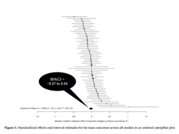
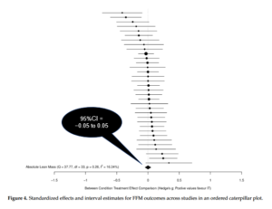

Recent Blog Posts
Cardio
November 21, 2021
A common controversy in the fitness field is whether to use high-intensity interval training (HIIT) or moderate-intensity continuous training (MICT) for optimizing fat loss. The debate rages on, with proponents on both sides of argument supporting their positions with logical rationale.
To help bring clarity to the topic, our group recently carried out a meta-analysis of existing literature. This paper came to fruition after a previous meta-analysis showed superior body comp benefits for HIIT, going as far as alluding to HIIT as a “magic bullet” for fat loss. The paper received a huge amount of media attention, with some of the most prominent magazines and news outlets touting the findings in feature articles. However, a subsequent letter to the editor noted that the paper had multiple issues in reporting and analysis. Sadly, the inconsistencies were never addressed by the authors, ultimately leading to the paper’s retraction.
Given the aforementioned issues with the previous meta-analysis, I decided to make this topic the focus of an independent study course that I teach in our master’s degree program, teaming with my students to remedy the literature by carrying out an updated meta. We comprehensively searched multiple databases for research directly comparing HIIT and MICT on measures of body composition and found 56 studies that met our inclusion criteria. I invited my colleagues James Steele (a co-author on the previous meta who wrote a detailed Twitter post about the experience) and Jozo Grgic to collaborate on the analysis and interpretation of data. The paper, titled Slow and Steady, or Hard and Fast? A Systematic Review and Meta-Analysis of Studies Comparing Body Composition Changes between Interval Training and Moderate Intensity Continuous Training, is open-access, free for all to read.
In short, our results refute those of the previous meta, providing compelling evidence that HIIT and MICT produce very similar decreases in fat loss and increases in fat-free mass over time. In technical terms, the point estimates for all measures hovered around zero with very narrow confidence intervals (see the accompanying figures below). In layman’s terms, there were virtually no differences in body composition between methods under the conditions studied. None. Intriguingly, there were similar rates of adherence (high) and adverse events (low) between methods as well.


Take-home: We can confidently state that HIIT cannot be considered a “magic bullet” for fat loss; MICT is equally as effective for achieving this outcome.
It’s important to note that the absolute amount of fat loss from cardio in the studies analyzed was quite small, amounting to an average of less than a pound over 12 weeks. Tightly controlled research shows that cardio can produce meaningful reductions in body fat, but it requires a large time commitment to achieve these results (in this case, ~11 hours per week)—a commitment beyond what most people are willing and able to dedicate. This finding reinforces the fact that diet is the most effective way to lose fat. That said, emerging evidence indicates that cardio is a beneficial supplement to fat loss regimens, particularly for sustaining long-term weight maintenance (ideally combined with resistance training, which is arguably of even greater value in this regard).
There are several important caveats to findings: First, the vast majority of studies instructed subjects to follow their usual diet as opposed to providing a structured nutritional regimen. Thus, it’s not clear if and how combining HIIT or MICT with a diet-induced energy deficit may affect results. Second, the studies did not take into account the effects of combining cardio with resistance training (a.k.a. concurrent training). It’s possible there may be a differential interaction (i.e. one condition has a more pronounced interaction than the other) when the two modalities are combined, either from an acute interference effect or perhaps chronically from overtraining. Third, there is a paucity of research on those with low body fat levels (e.g. bodybuilders, athletes, etc.); it remains to be determined if different cardio methods may impact the ability to further reduce body fat (i.e. into single-digit percentages) in these individuals. Finally, the meta-analysis is specific to the effects of cardio on body composition. There is evidence that HIIT training may confer additional health-related benefits over and above that seen with MICT, at least in certain outcomes.
The bottom line is that, from a body comp standpoint, you should choose an aerobic method based on preference. Results with HIIT are accomplished in less than half the time as MICT, but HIIT requires a higher level of exertion that heightens temporary discomfort. For situations specific to the study limitations (i.e. cardio performed in combination with restrictive diets, resistance training, and/or those with low body fat levels), experimentation is warranted to tailor prescription to your individual results. Finally, note that the choice does not necessarily have to be binary; you can opt to perform some HIIT sessions and some MICT sessions. Research can help to guide exercise prescription, but ultimately you must determine the best course of action based on individual needs, abilities, and goals.
Cardio
September 1, 2011
A recent New York Times piece cited my recent paper on fasted cardio, summarizing my findings in an article titled Really? The Claim: Exercising on an Empty Stomach Burns More Fat. Good to see that mainstream publications are taking the lead in debunking some of the myths that pervade the fitness industry.
Stay Fit!
Brad
Cardio, Exercise
April 12, 2011
I’ve agreed to be a regular contributor to bodybuilding.com–the Internet’s largest bodybuilding site. My first article for the site critically analyzes the strategy to perform cardio on an empty stomach. It’s a less technical version of the research review I did for the NSCA Strength and Conditioning Journal. You can read the article at the link below:
The Myth of Cardio Before Breakfast–Debunked!
I’ll keep you posted on future articles…
Stay Fit!
Brad
Cardio
March 17, 2011
A majority of people who perform cardio do so to burn fat. The quest to optimize fat loss from cardio has made the term “fat burning zone” a buzzword in the fitness industry; so much so that “fat burning zone” programs have been integrated into almost every treadmill, elliptical trainer and stationary bike on the market. (See my previous post on the Myth of the Fat Burning Zone for a critical analysis of this strategy).
An often overlooked fat-burning aspect of cardio is its effect on excess-post exercise oxygen consumption (EPOC). Simply stated, EPOC is the number of calories you expend after the completion of a workout to return your body to its homeostatic state. It’s often referred to as the “afterburn” and includes such processes as the resynthesis of phosphagens, removal/conversion of lactate, restoration of glycogen, reoxygenation of blood, and the return of breathing and heart rate to normal levels.
Some researchers and fitness pros, however, have questioned the applicability of EPOC in promoting fat loss. A recent NY Times article quoted an exercise physiologist as saying the metabolic effects of EPOC are negligible. Others have echoed similar sentiments, claiming that the only relevant impact of cardio on fat loss is the number of calories burned during the workout. What gives?
The issue here can be summed up in a word: intensity. Namely, low intensity exercise has a minimal impact on EPOC, with an afterburn of only a few minutes. Read: If you walk for an hour, don’t expect to burn many calories once you stop walking. On the other hand, high-intensity cardio has a substantial effect on EPOC. How substantial? A recent study (1) showed that a 45 minute bout of cardio performed at approximately 73% of VO2 max increased post-exercise caloric expenditure by a whopping 190 calories! This represented an additional 37% expenditure over and above the 500+ calories burned during the workout itself. To put these results in perspective, every 2.5 weeks you’ll burn an extra pound simply from the effects of EPOC. Not too shabby, huh?
What’s the take home message? If you want to maximize fat loss from cardio, you need to up the intensity. As I’ve discussed before, high-intensity interval training is an excellent strategy to ramp up fat burning. Forget the fat burning zone. Push yourself to train above your lactate threshold, at least for portions of your exercise bout. You’ll reap fat burning rewards long after you stop exercising.
Stay Fit!
Brad
Knab AM, Shanely RA, Corbin K, Jin F, Sha W, Nieman DC. A 45-Minute Vigorous Exercise Bout Increases Metabolic Rate for 14 Hours. Med Sci Sports Exerc. 2011 Feb 8. [Epub ahead of print]
Cardio
March 16, 2011
Here is a link to an interesting radio interview where Layne Norton PhD is interviewed about my recent review paper on fasted cardio. Layne is a pro natural bodybuilder and all around astute guy (he has his doctorate in nutritional science). Here he does a great job of articulating the specifics as to why fasted cardio produces little if any benefit with respect to fat loss, and why it actually might be detrimental to body composition. Give it a listen!
Radio Interview with Layne Norton, PhD
Stay Fit!
Brad
Cardio
February 24, 2011
I was recently interviewed for an article on Rodale.com about my article, Does Cardio After an Overnight Fast Maximize Fat Loss?. The article does a nice job summing up the conclusions. Here is a link to the article:
Why Exercising on an Empty Stomach Is a Bad Idea.
Stay Fit!
Brad
Cardio
February 14, 2011
Do you drag yourself out of bed first thing every morning to perform cardio before breakfast in hopes of jacking up your fat burning capacity? If so, go back to sleep!
The fact is, performing cardio on an empty stomach does little to increase fat burning over exercising in the fed state. I recently wrote an article for the NSCA Strength and Conditioning Journal titled, Does Cardio After an Overnight Fast Maximize Fat Loss? that examined the research on the topic. Here is a synopsis:
1) When exercising at moderate to high intensity, the body breaks down substantially more fat than it can burn for fuel. This effect is magnified in experienced exercisers. Ultimately, the fatty acids get “trapped” due to exercise-induced ischemia and are unable to reach the muscle for oxidation. Thus, while there is an increased breakdown of fat when you don’t eat prior to performing cardio, the additional fatty acids don’t get burned and simply end up getting stored again in fat tissue.
2) Studies show a significantly greater amount of calories burned post-workout when you eat prior to training compared to if you don’t (i.e. the “thermic effect of exercise). The upshot is that performing cardio while fasting blunts fat burning following the exercise bout, which potentially can add up to a substantial amount depending on exercise intensity.
3) As much as 50% of the fat burned during exercise comes from intramuscular triglycerides (fat stored within muscle). This fat serves as a reserve energy source and has nothing to do with physical appearance. Thus, even if any additional fat was burned during the bout by not eating, the effects on body composition would be far less than simply looking at the total amount of fat burned.
4) Last, and perhaps most importantly, fat burning must be considered over the course of days—not on an hour-to-hour basis—to get a meaningful perspective on its impact on body composition. The human body is constantly adjusting its use of carbs versus fat. As a general rule, if you burn more carbs during a workout, you inevitably burn more fat in the postexercise period and vice versa. It all evens out in the end.
Bottom line: When you do your cardio is really not important. Like the Nike commercial says: Just do it!
Stay Fit!
Brad
Cardio
August 10, 2010
There is a common belief that the treadmill is the best cardio modality for burning fat. This belief seems to be supported by various books and internet sites that post charts showing a greater expenditure of calories associated with the treadmill when compared to similar time spent on alternative cardio modalities.
A recent study by Brown and colleagues (1), however, provides evidence that this might not be the case. Eighteen subjects (9 males and 9 females) were assessed while either exercising on the treadmill or the elliptical trainer. The results might surprise you. Researchers found that when exercising at the same rating of perceived exertion (a measure of how hard one is training), there was no significant difference in the number of calories burned between the two modalities.
Fat burning as it applies to aerobic exercise can be boiled down to two basic factors: intensity (i.e. how hard you are exercising) and duration (how long you are exercising). The key point is that with respect to training intensity, it doen’t matter whether you are running, biking, stair climbing, etc.; provided you are putting in the same relative effort, fat burning will be basically the same.
The take home message here is that if you don’t like to run, don’t force yourself to slog through a treadmill workout in hopes of burning a few extra calories. As long as you train at a comparable level of intensity, the differences in fat burning between modalities will be negligible. Given that the most important aspect of any exercise program is adherence (you can’t get results if you’re not training, right?), you should choose a cardio modality based on your goals and preferences–not because it purportedly burns more fat.
Stay Fit!
Brad
1) Brown GA, Cook CM, Krueger RD, Heelan KA. Comparison of energy expenditure on a treadmill vs. an elliptical device at a self-selected exercise intensity. J Strength Cond Res. 2010 Jun;24(6):1643-9.
Cardio
January 31, 2010
Set foot in any gym and you’ll no doubt see cardio machines that have charts to help you train in your ‘fat burning zone’. The theory behind the concept is based on studies showing that the percentage of fat used as an energy source is optimized when you train at an intensity between 60 to 80 percent of your target heart rate. But while increasing the percentage of fat burned for fuel sounds like a great way to get lean, it unfortunately doesn’t translate into burning more fat on an absolute basis. The most important aspect of shedding body fat is the total amount of calories burned—not the percentage of calories from fat—and therefore a higher intensity cardio routine is the better choice.
You see, the human body is a dynamic organism and constantly adjusts its use of fat for fuel. This process is governed by a host of factors (including enzyme levels, substrate availability, internal feedback loops, etc.). If you expend more calories than you consume, your body will shift to a fat burning mode and mobilize excess adipose as a source of energy. Thus, from a fat loss perspective, high-intensity exercise burns more fat calories on an absolute basis than lower intensity activities.
Ideally, the activity that maximizes calorie burning is interval training, where short bouts of low intensity exercise are interspersed with high intensity bouts. Interval training not only heightens fat burning during the activity itself, but also increases the amount of calories you burn after the workout is over! This is due to a phenomenon called excess post-exercise oxygen consumption (EPOC). Simply stated, EPOC keeps your metabolism elevated for several hours following training. Moreover, there is an associated increase in the secretion of both growth hormone and noradrenaline—hormones that are integrally involved in the fat burning process—resulting in an increased utilization of fat of fuel. All told, there is both a greater total amount of calories expended as well as a greater amount of fat oxidation following training.
Here’s the catch, though: EPOC is intensity dependent—the harder you train, the more calories you expend following training. That’s why you need to push yourself as hard as you can during your high-intensity intervals, going as close to all-out as possible. For those who have never performed this type of cardio, I generally recommend starting out with an interval ratio of 4:1 (i.e. four minutes at low intensity followed by 1 minute at high intensity) and, as you become more fit, gradually lower the ratio until you are at 1:1.
Although people tend to associate interval training with treadmill exercise, virtually any cardiovascular activity can be employed, including machines such as the stair climber, elliptical machine, and stationary bike. You can also jump rope or perform any number of outdoor activities, too. Just make sure that you are readily able to switch between high and low intensities. In final analysis, you’ll exert a good deal more effort in your training, but the results will be well worth it!
If you’d like to read about the science behind the concept, check out the article I co-wrote with Jay Dawes titled, High-Intensity Interval Training: Applications for General Fitness Training for a recent issue of the NSCA Strength and Conditioning Journal.
Stay Fit!
Brad
Reference
Schoenfeld, B., Dawes, J. (2009). High-Intensity Interval Training: Applications for General Fitness Training. Strength and Conditioning Journal, 31(6), 44-46

Bookmark this on Delicious
Cardio
December 22, 2009
For those who have read my books or attended one of my seminars, you’ll know that I’m a big proponent of performing interval training to optimize fat loss. I was quoted in the current issue of More Magazine as stating that it’s the most effective cardio technique for slimming down. So true!
As noted in the article, the benefits of interval training have been borne out by research. Studies repeatedly show that it has significantly greater effects on reducing body fat levels, producing up to a nine-fold reduction in skin fold measurements. Best of all, interval training requires about half the workout time compared to traditional steady-state cardio training.
The concept behind interval training is simple: intersperse bouts of high-intensity cardio with lower intensity cardio. Pretty much any aerobic modality can be used for interval training. For example, you can choose jogging as the low-intensity cardio and running as the high intensity cardio. Alternatively, you can combine skipping rope with jumping rope. Or you can intersperse jumping jacks with squat thrusts. The possibilities are pretty much endless.
If you’re a beginner, keep the intervals on the longer side. A 1:4 high/low ratio is generally a good starting point. Try to gradually narrow the interval until you’re training at a 1:1 ratio. 20 to 30 minutes a session, three days a week is all you need to do to see terrific results. Be careful that you don’t overdo it, though. The high-intensity nature of the routine can easily lead to overtraining if you’re overzealous. As is often the case, less can be more!
Stay Fit!
Brad
Bookmark this on Delicious


 Entries (RSS)
Entries (RSS)


{kind=link}
{kind=link}
{kind=link}
{kind=link}
{kind=link}